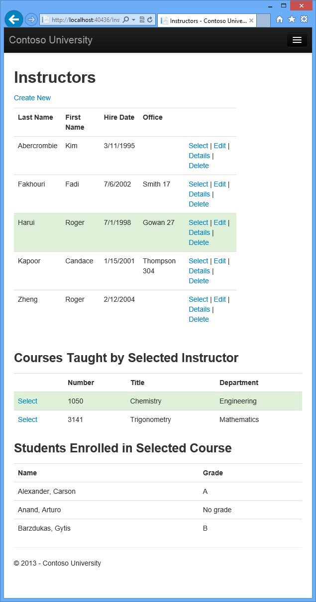
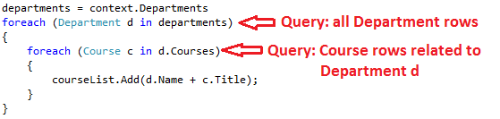
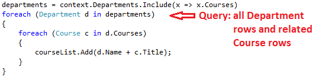
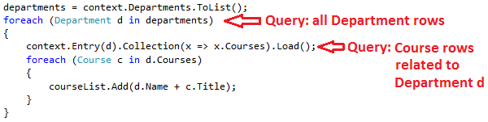
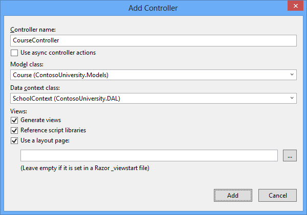
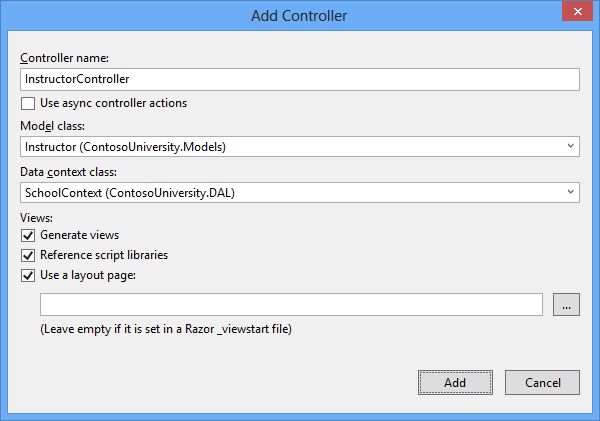
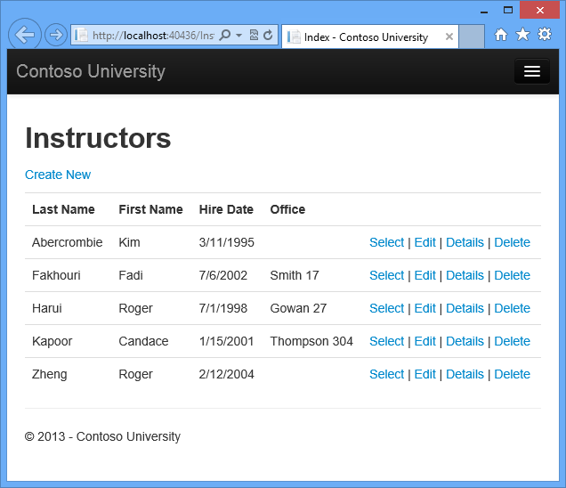
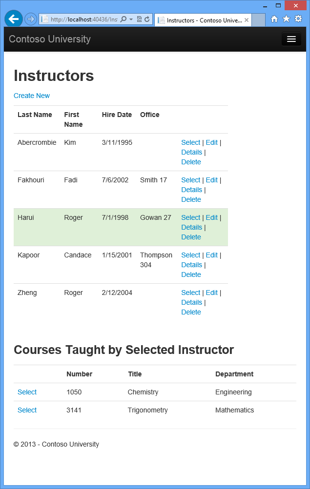

Reading Related Data with the Entity Framework in an ASP.NET MVC Application
The Contoso University sample web application demonstrates how to create ASP.NET MVC 5 applications using the Entity Framework 6 Code First and Visual Studio 2013. For information about the tutorial series, see the first tutorial in the series.
In the previous tutorial you completed the School data model. In this tutorial you'll read and display related data — that is, data that the Entity Framework loads into navigation properties.
The following illustrations show the pages that you'll work with.

Lazy, Eager, and Explicit Loading of Related Data
There are several ways that the Entity Framework can load related data into the navigation properties of an entity:
- Lazy loading. When the entity is first read, related data isn't retrieved. However, the first time you attempt to access a navigation property, the data required for that navigation property is automatically retrieved. This results in multiple queries sent to the database — one for the entity itself and one each time that related data for the entity must be retrieved.
The
DbContextclass enables lazy loading by default.
-
Eager loading. When the entity is read, related data is retrieved along with it. This typically results in a single join query that retrieves all of the data that's needed. You specify eager loading by using the
Includemethod.
-
Explicit loading. This is similar to lazy loading, except that you explicitly retrieve the related data in code; it doesn't happen automatically when you access a navigation property. You load related data manually by getting the object state manager entry for an entity and calling the Collection.Load method for collections or the Reference.Load method for properties that hold a single entity. (In the following example, if you wanted to load the Administrator navigation property, you'd replace
Collection(x => x.Courses)withReference(x => x.Administrator).) Typically you'd use explicit loading only when you've turned lazy loading off.
Because they don't immediately retrieve the property values, lazy loading and explicit loading are also both known as deferred loading.
Performance considerations
If you know you need related data for every entity retrieved, eager loading often offers the best performance, because a single query sent to the database is typically more efficient than separate queries for each entity retrieved. For example, in the above examples, suppose that each department has ten related courses. The eager loading example would result in just a single (join) query and a single round trip to the database. The lazy loading and explicit loading examples would both result in eleven queries and eleven round trips to the database. The extra round trips to the database are especially detrimental to performance when latency is high.
On the other hand, in some scenarios lazy loading is more efficient. Eager loading might cause a very complex join to be generated, which SQL Server can't process efficiently. Or if you need to access an entity's navigation properties only for a subset of a set of the entities you're processing, lazy loading might perform better because eager loading would retrieve more data than you need. If performance is critical, it's best to test performance both ways in order to make the best choice.
Lazy loading can mask code that causes performance problems. For example, code that doesn't specify eager or explicit loading but processes a high volume of entities and uses several navigation properties in each iteration might be very inefficient (because of many round trips to the database). An application that performs well in development using an on premise SQL server might have performance problems when moved to Azure SQL Database due to the increased latency and lazy loading. Profiling the database queries with a realistic test load will help you determine if lazy loading is appropriate. For more information see Demystifying Entity Framework Strategies: Loading Related Data and Using the Entity Framework to Reduce Network Latency to SQL Azure.
Disable lazy loading before serialization
If you leave lazy loading enabled during serialization, you can end up querying significantly more data than you intended. Serialization generally works by accessing each property on an instance of a type. Property access triggers lazy loading, and those lazy loaded entities are serialized. The serialization process then accesses each property of the lazy-loaded entities, potentially causing even more lazy loading and serialization. To prevent this run-away chain reaction, turn lazy loading off before you serialize an entity.
Serialization can also be complicated by the proxy classes that the Entity Framework uses, as explained in the Advanced Scenarios tutorial.
One way to avoid serialization problems is to serialize data transfer objects (DTOs) instead of entity objects, as shown in the Using Web API with Entity Framework tutorial.
If you don't use DTOs, you can disable lazy loading and avoid proxy issues by disabling proxy creation.
Here are some other ways to disable lazy loading:
- For specific navigation properties, omit the
virtualkeyword when you declare the property. - For all navigation properties, set
LazyLoadingEnabledtofalse, put the following code in the constructor of your context class:this.Configuration.LazyLoadingEnabled = false;
Create a Courses Page That Displays Department Name
The Course entity includes a navigation property that contains the Department entity of the department that the course is assigned to. To display the name of the assigned department in a list of courses, you need to get the Name property from the Department entity that is in the Course.Department navigation property.
Create a controller named CourseController (not CoursesController) for the Course entity type, using the same options
for the MVC 5 Controller with views, using Entity Framework
scaffolder that you did earlier for the Student controller, as shown in the following illustration:

Open Controllers\CourseController.cs and look at the Index method:
public ActionResult Index()
{
var courses = db.Courses.Include(c => c.Department);
return View(courses.ToList());
}
The automatic scaffolding has specified eager loading for the Department navigation property by using the Include method.
Open Views\Course\Index.cshtml and replace the template code with the following code. The changes are highlighted:
@model IEnumerable<ContosoUniversity.Models.Course>
@{
ViewBag.Title = "Courses";
}
<h2>Courses</h2>
<p>
@Html.ActionLink("Create New", "Create")
</p>
<table class="table">
<tr>
<th>
@Html.DisplayNameFor(model => model.CourseID)
</th>
<th>
@Html.DisplayNameFor(model => model.Title)
</th>
<th>
@Html.DisplayNameFor(model => model.Credits)
</th>
<th>
Department
</th>
<th></th>
</tr>
@foreach (var item in Model) {
<tr>
<td>
@Html.DisplayFor(modelItem => item.CourseID)
</td>
<td>
@Html.DisplayFor(modelItem => item.Title)
</td>
<td>
@Html.DisplayFor(modelItem => item.Credits)
</td>
<td>
@Html.DisplayFor(modelItem => item.Department.Name)
</td>
<td>
@Html.ActionLink("Edit", "Edit", new { id=item.CourseID }) |
@Html.ActionLink("Details", "Details", new { id=item.CourseID }) |
@Html.ActionLink("Delete", "Delete", new { id=item.CourseID })
</td>
</tr>
}
</table>
You've made the following changes to the scaffolded code:
- Changed the heading from Index to Courses.
- Added a Number column that shows the
CourseIDproperty value. By default, primary keys aren't scaffolded because normally they are meaningless to end users. However, in this case the primary key is meaningful and you want to show it. - Moved the Department column to the right side and changed
its heading. The scaffolder correctly chose to display the
Nameproperty from theDepartmententity, but here in the Course page the column heading should be Department rather than Name.
Notice that for the Department column, the scaffolded code displays the Name property of the Department entity that's loaded into the Department navigation property:
<td>
@Html.DisplayFor(modelItem => item.Department.Name)
</td>
Run the page (select the Courses tab on the Contoso University home page) to see the list with department names.
Create an Instructors Page That Shows Courses and Enrollments
In this section you'll create a controller and view for the Instructor entity in order to display the Instructors page:
This page reads and displays related data in the following ways:
- The list of instructors displays related data from the
OfficeAssignmententity. TheInstructorandOfficeAssignmententities are in a one-to-zero-or-one relationship. You'll use eager loading for theOfficeAssignmententities. As explained earlier, eager loading is typically more efficient when you need the related data for all retrieved rows of the primary table. In this case, you want to display office assignments for all displayed instructors. - When the user selects an instructor, related
Courseentities are displayed. TheInstructorandCourseentities are in a many-to-many relationship. You'll use eager loading for theCourseentities and their relatedDepartmententities. In this case, lazy loading might be more efficient because you need courses only for the selected instructor. However, this example shows how to use eager loading for navigation properties within entities that are themselves in navigation properties. - When the user selects a course, related data from the
Enrollmentsentity set is displayed. TheCourseandEnrollmententities are in a one-to-many relationship. You'll add explicit loading forEnrollmententities and their relatedStudententities. (Explicit loading isn't necessary because lazy loading is enabled, but this shows how to do explicit loading.)
Create a View Model for the Instructor Index View
The Instructors page shows three different tables. Therefore, you'll create a view model that includes three properties, each holding the data for one of the tables.
In the ViewModels folder, create InstructorIndexData.cs and replace the existing code with the following code:
using System.Collections.Generic;
using ContosoUniversity.Models;
namespace ContosoUniversity.ViewModels
{
public class InstructorIndexData
{
public IEnumerable<Instructor> Instructors { get; set; }
public IEnumerable<Course> Courses { get; set; }
public IEnumerable<Enrollment> Enrollments { get; set; }
}
}
Create the Instructor Controller and Views
Create an InstructorController (not InstructorsController) controller with EF read/write
actions as shown in the following illustration:

Open Controllers\InstructorController.cs and add a using statement for the ViewModels namespace:
using ContosoUniversity.ViewModels;
The scaffolded code in the Index method specifies eager loading only for the OfficeAssignment navigation property:
public ActionResult Index()
{
var instructors = db.Instructors.Include(i => i.OfficeAssignment);
return View(instructors.ToList());
}
Replace the Index method with the following code to load additional related data and put it in the view model:
public ActionResult Index(int? id, int? courseID)
{
var viewModel = new InstructorIndexData();
viewModel.Instructors = db.Instructors
.Include(i => i.OfficeAssignment)
.Include(i => i.Courses.Select(c => c.Department))
.OrderBy(i => i.LastName);
if (id != null)
{
ViewBag.InstructorID = id.Value;
viewModel.Courses = viewModel.Instructors.Where(
i => i.ID == id.Value).Single().Courses;
}
if (courseID != null)
{
ViewBag.CourseID = courseID.Value;
viewModel.Enrollments = viewModel.Courses.Where(
x => x.CourseID == courseID).Single().Enrollments;
}
return View(viewModel);
}
The method accepts optional route data (id) and a query string parameter
(courseID) that provide the ID values of the selected instructor and selected course, and passes all of the required data to the view. The parameters are provided by the Select hyperlinks on the page.
The code begins by creating an
instance of the view model and putting in it the list of instructors. The code
specifies eager loading for the Instructor.OfficeAssignment and the Instructor.Courses
navigation property.
var viewModel = new InstructorIndexData();
viewModel.Instructors = db.Instructors
.Include(i => i.OfficeAssignment)
.Include(i => i.Courses.Select(c => c.Department))
.OrderBy(i => i.LastName);
The second Include method loads Courses, and for
each Course that is loaded it does eager loading for the Course.Department
navigation property.
.Include(i => i.Courses.Select(c => c.Department))
As mentioned previously, eager loading is not required but is done to
improve performance. Since the view
always requires the OfficeAssignment entity, it's
more efficient to fetch that in the same query. Course entities are
required when an instructor is selected in the web page, so eager loading is
better than lazy loading only if the page is displayed more often with a course
selected than without.
If an instructor ID was selected, the selected instructor is retrieved from the list of instructors in the view model. The view model's Courses property is then loaded with the Course entities from that instructor's Courses navigation property.
if (id != null)
{
ViewBag.InstructorID = id.Value;
viewModel.Courses = viewModel.Instructors.Where(i => i.ID == id.Value).Single().Courses;
}
The Where method returns a collection, but in this case the criteria passed to that method result in only a single Instructor entity being returned. The Single method converts the collection into a single Instructor entity, which gives you access to that entity's Courses property.
You use the
Single method on a collection when you know the collection will have only one item. The Single method throws an exception if the collection passed to it is empty or if there's more than one item. An alternative is
SingleOrDefault, which returns
a default value (null in this case) if the collection is empty. However, in this case that would still result in an exception (from trying to find a Courses property on a
null reference), and the exception message would less clearly indicate the cause of the problem. When you call the Single method, you can also pass in the Where condition instead of calling the Where method separately:
.Single(i => i.ID == id.Value)
Instead of:
.Where(I => i.ID == id.Value).Single()
Next, if a course was selected, the selected course is retrieved from the list of courses in the view model. Then the view model's Enrollments property is loaded with the Enrollment entities from that course's Enrollments navigation property.
if (courseID != null)
{
ViewBag.CourseID = courseID.Value;
viewModel.Enrollments = viewModel.Courses.Where(
x => x.CourseID == courseID).Single().Enrollments;
}
Modify the Instructor Index View
In Views\Instructor\Index.cshtml, replace the template code with the following code. The changes are highlighted:
@model ContosoUniversity.ViewModels.InstructorIndexData
@{
ViewBag.Title = "Instructors";
}
<h2>Instructors</h2>
<p>
@Html.ActionLink("Create New", "Create")
</p>
<table class="table">
<tr>
<th>Last Name</th>
<th>First Name</th>
<th>Hire Date</th>
<th>Office</th>
<th></th>
</tr>
@foreach (var item in Model.Instructors)
{
string selectedRow = "";
if (item.ID == ViewBag.InstructorID)
{
selectedRow = "success";
}
<tr class="@selectedRow">
<td>
@Html.DisplayFor(modelItem => item.LastName)
</td>
<td>
@Html.DisplayFor(modelItem => item.FirstMidName)
</td>
<td>
@Html.DisplayFor(modelItem => item.HireDate)
</td>
<td>
@if (item.OfficeAssignment != null)
{
@item.OfficeAssignment.Location
}
</td>
<td>
@Html.ActionLink("Select", "Index", new { id = item.ID }) |
@Html.ActionLink("Edit", "Edit", new { id = item.ID }) |
@Html.ActionLink("Details", "Details", new { id = item.ID }) |
@Html.ActionLink("Delete", "Delete", new { id = item.ID })
</td>
</tr>
}
</table>
You've made the following changes to the existing code:
- Changed the model class to
InstructorIndexData. - Changed the page title from Index to Instructors.
- Added an Office column that displays
item.OfficeAssignment.Locationonly ifitem.OfficeAssignmentis not null. (Because this is a one-to-zero-or-one relationship, there might not be a relatedOfficeAssignmententity.)<td> @if (item.OfficeAssignment != null) { @item.OfficeAssignment.Location } </td> - Added code that will dynamically add
class="success"to thetrelement of the selected instructor. This sets a background color for the selected row using a Bootstrap class.string selectedRow = ""; if (item.InstructorID == ViewBag.InstructorID) { selectedRow = "success"; } <tr class="@selectedRow" valign="top"> - Added a new
ActionLinklabeled Select immediately before the other links in each row, which causes the selected instructor ID to be sent to theIndexmethod.
Run the application and select the Instructors tab. The page displays the Location property of related OfficeAssignment entities and an empty table cell when there's no related OfficeAssignment entity.

In the Views\Instructor\Index.cshtml file, after the closing table element
(at the end of the file), add the following code. This code displays a list of courses related to an instructor when an instructor is selected.
@if (Model.Courses != null)
{
<h3>Courses Taught by Selected Instructor</h3>
<table class="table">
<tr>
<th></th>
<th>Number</th>
<th>Title</th>
<th>Department</th>
</tr>
@foreach (var item in Model.Courses)
{
string selectedRow = "";
if (item.CourseID == ViewBag.CourseID)
{
selectedRow = "success";
}
<tr class="@selectedRow">
<td>
@Html.ActionLink("Select", "Index", new { courseID = item.CourseID })
</td>
<td>
@item.CourseID
</td>
<td>
@item.Title
</td>
<td>
@item.Department.Name
</td>
</tr>
}
</table>
}
This code reads the Courses property of the view model to display a list of courses. It also provides a Select hyperlink that sends the ID of the selected course to the Index action method.
Run the page and select an instructor. Now you see a grid that displays courses assigned to the selected instructor, and for each course you see the name of the assigned department.

After the code block you just added, add the following code. This displays a list of the students who are enrolled in a course when that course is selected.
@if (Model.Enrollments != null)
{
<h3>
Students Enrolled in Selected Course
</h3>
<table class="table">
<tr>
<th>Name</th>
<th>Grade</th>
</tr>
@foreach (var item in Model.Enrollments)
{
<tr>
<td>
@item.Student.FullName
</td>
<td>
@Html.DisplayFor(modelItem => item.Grade)
</td>
</tr>
}
</table>
}
This code reads the Enrollments property of the view model in order to display a list of students enrolled in the course.
Run the page and select an instructor. Then select a course to see the list of enrolled students and their grades.
Adding Explicit Loading
Open InstructorController.cs and look at how the Index method gets the list of enrollments for a selected course:
if (courseID != null)
{
ViewBag.CourseID = courseID.Value;
viewModel.Enrollments = viewModel.Courses.Where(
x => x.CourseID == courseID).Single().Enrollments;
}
When you retrieved the list of instructors, you specified eager loading for the Courses navigation property and for the Department property of each course. Then you put the Courses collection in the view model, and now you're accessing the Enrollments navigation property from one entity in that collection. Because you didn't specify eager loading for the Course.Enrollments navigation property, the data from that property is appearing in the page as a result of lazy loading.
If you disabled lazy loading without changing the code in any other way, the Enrollments property would be null regardless of how many enrollments the course actually had.
In that case, to load the Enrollments property, you'd have to specify either eager loading or explicit loading. You've already seen how to do eager loading. In order to see an example of explicit loading, replace the Index method with the following code, which explicitly loads the Enrollments
property. The code changed are highlighted.
public ActionResult Index(int? id, int? courseID)
{
var viewModel = new InstructorIndexData();
viewModel.Instructors = db.Instructors
.Include(i => i.OfficeAssignment)
.Include(i => i.Courses.Select(c => c.Department))
.OrderBy(i => i.LastName);
if (id != null)
{
ViewBag.InstructorID = id.Value;
viewModel.Courses = viewModel.Instructors.Where(
i => i.ID == id.Value).Single().Courses;
}
if (courseID != null)
{
ViewBag.CourseID = courseID.Value;
// Lazy loading
//viewModel.Enrollments = viewModel.Courses.Where(
// x => x.CourseID == courseID).Single().Enrollments;
// Explicit loading
var selectedCourse = viewModel.Courses.Where(x => x.CourseID == courseID).Single();
db.Entry(selectedCourse).Collection(x => x.Enrollments).Load();
foreach (Enrollment enrollment in selectedCourse.Enrollments)
{
db.Entry(enrollment).Reference(x => x.Student).Load();
}
viewModel.Enrollments = selectedCourse.Enrollments;
}
return View(viewModel);
}
After getting the selected Course entity, the new code explicitly loads that course's Enrollments navigation property:
db.Entry(selectedCourse).Collection(x => x.Enrollments).Load();
Then it explicitly loads each Enrollment entity's related Student entity:
db.Entry(enrollment).Reference(x => x.Student).Load();
Notice that you use the Collection method to load a collection property, but for a property that holds just one entity, you use the Reference method.
Run the Instructor Index page now and you'll see no difference in what's displayed on the page, although you've changed how the data is retrieved.
Summary
You've now used all three ways (lazy, eager, and explicit) to load related data into navigation properties. In the next tutorial you'll learn how to update related data.
Please leave feedback on how you liked this tutorial and what we could improve. You can also request new topics at Show Me How With Code.
Links to other Entity Framework resources can be found in the ASP.NET Data Access - Recommended Resources.